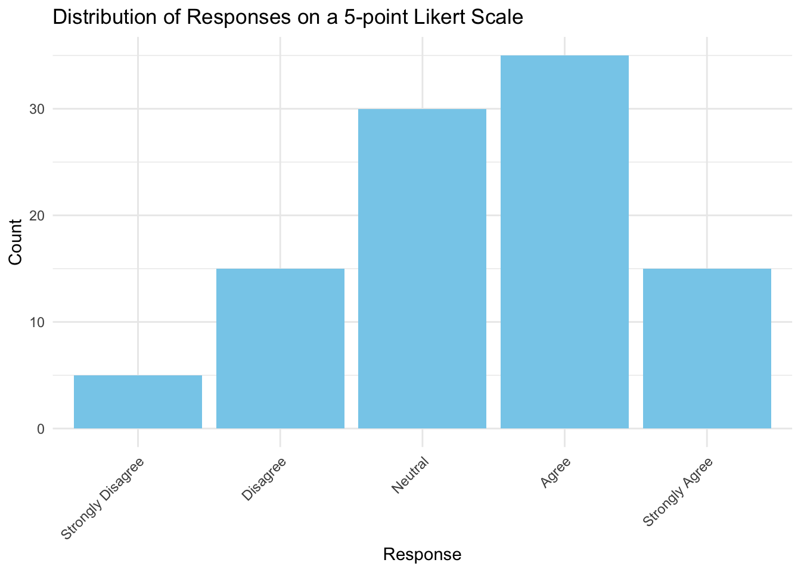

Descriptive Statistics 1
Types of data
Data Types: Nominal, Ordinal, Interval, and Ratio
In this material, you will learn about the four main types of data: nominal, ordinal, interval, and ratio. After learning the definitions, test your understanding with the self-assessment questions!
1. Nominal Data
- Definition: Categories or groups that do not have an intrinsic order. These are qualitative labels.
- Characteristics:
- Cannot be ordered.
- No numerical value.
- Only shows distinct groups.
- Examples:
- Gender (e.g., male, female, non-binary)
- Types of fruit (e.g., apple, banana, orange)
- Nationality (e.g., British, French, German)
2. Ordinal Data
- Definition: Categories that have a meaningful order, but the differences between them are not measurable or equal.
- Characteristics:
- Can be ordered.
- Intervals between ranks are not necessarily equal.
- Examples:
- Education levels (e.g., high school, bachelor’s, master’s, PhD)
- Likert scale (e.g., strongly disagree, disagree, neutral, agree, strongly agree)
- Race finishes (e.g., 1st, 2nd, 3rd place)
3. Interval Data
- Definition: Numerical data where the intervals between values are consistent, but there is no true zero point.
- Characteristics:
- Ordered with equal intervals between values.
- Can be added or subtracted.
- No true zero point.
- Examples:
- Temperature in Celsius or Fahrenheit (e.g., 10°C, 20°C — but 20°C is not “twice as hot” as 10°C).
- Calendar years (e.g., 2000, 2020)
4. Ratio Data
- Definition: Numerical data with equal intervals between values and a true zero point.
- Characteristics:
- Ordered with equal intervals.
- Has a true zero point (meaning the absence of the variable is possible).
- Can be added, subtracted, multiplied, and divided.
- Examples:
- Height (e.g., 0 cm, 150 cm, 180 cm)
- Weight (e.g., 0 kg, 50 kg, 100 kg)
- Time (e.g., 0 seconds, 10 seconds)
Complexities in Real-World Measurement
In psychological research, the classification of variables into measurement scales is not always straightforward. This section explores some of the nuances and challenges researchers face when dealing with real-world data.
Beyond Simple Classifications
While the traditional categories of nominal, ordinal, interval, and ratio scales provide a useful framework, many variables in practice don’t fit neatly into these classifications. It’s crucial to view these scales as flexible guidelines rather than rigid rules, helping researchers determine appropriate analytical approaches for different variables.
The Likert Scale: A Case Study
One of the most common measurement tools in psychology that illustrates this complexity is the Likert scale.
Example of a Likert Scale
Consider a very serious survey question like:
“To what extent do you agree with the statement: ‘All dogs are good and deserve treats’?”
With response options:
- Strongly disagree
- Disagree
- Neither agree nor disagree
- Agree
- Strongly agree
This 5-point Likert scale is a fundamental tool in survey design. Respondents choose from ordered options, often with verbal descriptors for each point. However, not all points need explicit descriptions:
- Strongly disagree
- Strongly agree
Classifying Likert Scales
Likert scales present a classification challenge:
- They are clearly discrete
- They are ordered, ruling out nominal scale
- They lack a true zero point, ruling out ratio scale
But are they ordinal or interval?
Arguments for Ordinal Classification
One perspective argues for ordinal classification:
- We can’t prove equal intervals between response options
- The difference between “strongly agree” and “agree” may not equal that between “agree” and “neutral”
Arguments for Interval-like Treatment
Many researchers treat Likert data as interval-like or “quasi-interval”:
- Participants often interpret these scales as having roughly equal intervals
- They tend to treat them as a true 1-to-5 range
Implications for Analysis
This ambiguity in classification has important implications for data analysis:
- Choice of statistical tests (parametric vs non-parametric)
- Interpretation of central tendency measures (mean vs median)
- Approach to visualizing data
Conclusion
The complexity of Likert scales highlights the need for careful consideration in variable classification and subsequent analysis choices. Researchers must balance theoretical ideals with practical realities, often making informed judgments about the most appropriate treatment of their data.
When working with Likert scales or similar measures:
- Consider the specific context of your research
- Be aware of the assumptions underlying your chosen analytical methods
- Be transparent about your reasoning in treating the data as ordinal or interval-like
- Consider sensitivity analyses to check if results differ based on the treatment of the scale
Ultimately, the goal is to make informed, defensible decisions that allow for meaningful interpretation of your research findings.
Summary of Data Types
Here’s a summary of the different types of data:
| Data Type | Can Be Ordered? | Equal Intervals? | True Zero Point? | Example |
|---|---|---|---|---|
| Nominal | No | No | No | Gender, Nationality |
| Ordinal | Yes | No | No | Education Level, Rank |
| Interval | Yes | Yes | No | Temperature (°C), Calendar Year |
| Ratio | Yes | Yes | Yes | Height, Weight, Time |
Self-Assessment Questions
Question 1: Identify the Data Type
For each of the following scenarios, identify whether the data is nominal, ordinal, interval, or ratio.
- The finish positions in a race (e.g., 1st, 2nd, 3rd).
- The types of pets owned by people in a survey (e.g., dog, cat, bird).
- The temperature in a room measured in Celsius.
- The number of books read by students in a year.
- The size categories for clothing (e.g., small, medium, large, extra large).
Question 2: Reflection
Consider your own interests in Psychology. Provide one example for each data type (nominal, ordinal, interval, and ratio) that might be relevant to your interests.
- Nominal:
- Ordinal:
- Interval:
- Ratio: